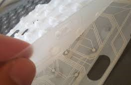

Hello World
Eu estou bem graças a Deus
Eu estou bem graças a Deus
Irei a escola em breve
A evolução dos teclados começou no século XIX, com Christopher Latham Sholes, que patenteou a primeira máquina de escrever comercialmente bem-sucedida em 1868 e introduziu o teclado QWERTY para maior eficiência na digitação. No entanto, a história remonta ao século XVIII, com a criação da primeira máquina de escrever por Henry Mill em 1714 e a introdução de um sistema de teclado por Pelegrinno Turri em 1808. Ao longo dos anos, diversas melhorias foram feitas, como o protótipo de William Austin Burt em 1829 e o modelo avançado de Carlos Thuber em 1843. Posteriormente, em 1881, surgiram os cartões perfurados, facilitando o armazenamento e leitura de mensagens. O código Morse foi substituído por impressoras mecânicas, marcando avanços na comunicação. No século XX, os teclados permaneciam associados às máquinas de escrever, e a máquina de teletipo foi desenvolvida para tornar a comunicação mais acessível, evoluindo para incluir o layout QWERTY e novas funcionalidades. Por volta de 1930, a união das máquinas de escrever e teletipo trouxe novos dispositivos utilizados em vários setores. O layout QWERTY teve um papel fundamental na transição para os computadores, sendo adotado nos primeiros modelos por volta dos anos 1940. Com o tempo, surgiram teclados mecânicos, de membrana e, mais recentemente, virtuais em dispositivos móveis. Tecnologias como inteligência artificial e reconhecimento de voz continuam a moldar o futuro dos teclados.
Os tipos de teclado Servem para adaptá-los às diferentes necessidades do usuário. Os teclados podem ser classificados de várias maneiras, dependendo de sua conexão, mecanismo, design e uso. Com o avanço da tecnologia, os teclados evoluíram bastante desde a sua criação. Isso proporciona a melhora de suas funcionalidades, bem como sua usabilidade. Hoje existem muitos tipos de teclado adaptados ao computador e soluções tecnológicas. Aqui iremos destacar esses tipos de teclados e suas características:
.jpg)
Os teclados mecânicos são conhecidos por sua durabilidade e sensação tátil ao digitar. Ele funciona utilizando interruptores individuais para cada tecla, ao invés de uma membrana de borracha como nos teclados convencionais. Esses interruptores mecânicos são compostos por três componentes principais:
1. Keycap (Tampa da Tecla): É a parte visível e onde você pressiona.
2. Switch (Interruptor): Fica abaixo do keycap e é responsável pela sensação tátil e pelo som. Ele contém uma mola que retorna a tecla à posição inicial após pressioná-la.
3. Placa de Circuito: Registra o sinal elétrico quando o interruptor é ativado e envia o comando para o computador.
O que torna os teclados mecânicos especiais é a diversidade de switches disponíveis, como os do tipo linear, tátil ou clique, oferecendo diferentes sensações de digitação ou jogo. Muitos preferem esses teclados por sua durabilidade, resposta rápida e feedback mais satisfatório. Além disso, eles costumam ser mais personalizáveis.
Esses teclados são projetados para reduzir a tensão nos músculos e articulações das mãos e pulsos, o que pode ajudar a prevenir lesões por esforço repetitivo. Eles geralmente têm um design dividido ou curvado, permitindo que as mãos e os pulsos fiquem em uma posição mais natural.
Ele se diferencia dos teclados comuns por suas características, sendo elas:
1. Divisão do teclado: Muitos teclados ergonômicos são divididos ao meio, permitindo que cada mão opere em ângulos mais confortáveis, alinhados com o posicionamento natural dos ombros.
2. Curvatura: Alguns têm um design curvado ou inclinado, que minimiza a necessidade de dobrar os pulsos.
3. Apoio para os pulsos: Vem com áreas acolchoadas onde os pulsos podem descansar, reduzindo a pressão
4. Disposição das teclas: As teclas podem ser reposicionadas ou inclinadas para minimizar movimentos desnecessários.
.jpg)

Aqui na nossa lista também encontraremos o teclado membrana, como sendo um que se destaca entre os outros, já que é graças à sua criação que se tornou possível acoplar o teclado aos nossos laptops, devido ao seu design compacto e silencioso. Não só isso, teclados de membrana têm muitas variedades em um nível técnico, por exemplo, é muito fácil para esses teclados ter uma certa resistência a fluidos, algo que em um ambiente profissional se torna uma grande vantagem. Seus principais componentes incluem:
1. Camadas de membrana: São folhas flexíveis com circuitos impressos, que registram os toques quando pressionadas.
2. Cúpulas de borracha ou silicone: Proporcionam a sensação de pressão e ajudam no retorno das teclas à posição original.
3. Placa de circuito: Conecta as camadas de membrana ao sistema eletrônico, transmitindo os comandos ao computador.
4. Cobertura plástica com teclas: Protege os componentes internos e fornece a interface de digitação.
Por serem mais simples e econômicos, os teclados de membrana costumam ser utilizados em notebooks, controles remotos e teclados de escritório.
.jpg)
Os teclados gamers são teclados mecânicos com algumas luzes LED RGB de todos os tipos. Eles são projetados para oferecer desempenho e durabilidade superiores, atendendo às exigências dos jogadores. Algumas das características que os diferenciam dos teclados comuns:
1. Switches mecânicos: Ao contrário dos teclados de membrana, os teclados gamers geralmente usam switches mecânicos, que proporcionam maior precisão, resposta rápida e uma sensação tátil distinta.
2. Iluminação RGB personalizável: Muitos modelos oferecem luzes LED RGB, permitindo que os jogadores customizem cores e efeitos para melhor estética ou funcionalidade.
3. Teclas programáveis e macros: Permitem que os jogadores atribuam comandos específicos a determinadas teclas, facilitando a jogabilidade em títulos competitivos.
4. Anti-ghosting e N-Key Rollover: Impedem que o teclado falhe ao detectar múltiplas teclas pressionadas simultaneamente, essencial para jogos que exigem comandos rápidos e complexos.
Cada tipo de teclados tem suas vantagens dependendo do uso.
.jpg)
Os layouts de teclado variam conforme o idioma, região e preferências de uso. Aqui estão alguns dos principais:
QWERTY: O layout mais comum, usado em muitos países. Foi projetado para máquinas de escrever e permanece popular.
AZERTY: Utilizado principalmente na França e em países francófonos. As teclas são organizadas de forma diferente do QWERTY.
DVORAK: Um layout alternativo projetado para aumentar a eficiência e reduzir o esforço durante a digitação.
ABNT e ABNT2: Padrões brasileiros que incluem teclas específicas para o idioma português, como o "ç" e acentos.
ANSI e ISO: Padrões internacionais que diferem no tamanho e posição de algumas teclas, como Enter e Shift.
O teclado, como um dos periféricos de entrada tem também muitos atalhos que facilitam a execução de alguns comandos ou programas do computador. Aqui tenho alguns deles que podem ajudar na eficiência para utilização do seu computador:
1. Ctrl + C: Copiar o texto ou item selecionado.
2. Ctrl + V: Colar o texto ou item copiado.
3. Ctrl + X: Recortar o texto ou item selecionado.
4. Ctrl + Z: Desfazer a última ação.
5. Ctrl + Y: Refazer a última ação desfeita.
6. Alt + Tab: Alternar entre janelas abertas.
7. Ctrl + S: Salvar o documento ou arquivo atual.
8. Alt + F4: Fechar o programa ou janela ativa.
9. Windows + D: Mostrar ou ocultar o desktop.
10. Windows + L: Bloquear o computador.
Esses atalhos podem ajudar a aumentar sua produtividade e facilitar o uso do computador.
Para personalizar o seu teclado, você pode alterar configurações, layout, idioma ou até mesmo usar softwares de terceiros. Aqui estão algumas maneiras de personalizar:
1. Alterar o layout do teclado:
- No Windows, vá para Configurações → Hora e idioma → Idioma.
Adicione ou selecione o idioma desejado e ajuste o layout do teclado.
2. Criar atalhos personalizados:
- Use ferramentas como AutoHotkey para definir macros e atalhos que tornam o teclado mais eficiente para suas necessidades
3. Teclados físicos customizados:
- Você pode substituir teclas ou adquirir um teclado mecânico que permita personalização das keycaps (capas das teclas) e da iluminação.
4. Aplicativos de teclado virtual:
- Existem apps e softwares que permitem criar layouts específicos ou adicionar funções extras ao teclado.
Visite as nossas redes sociais a baixo.
Comentários